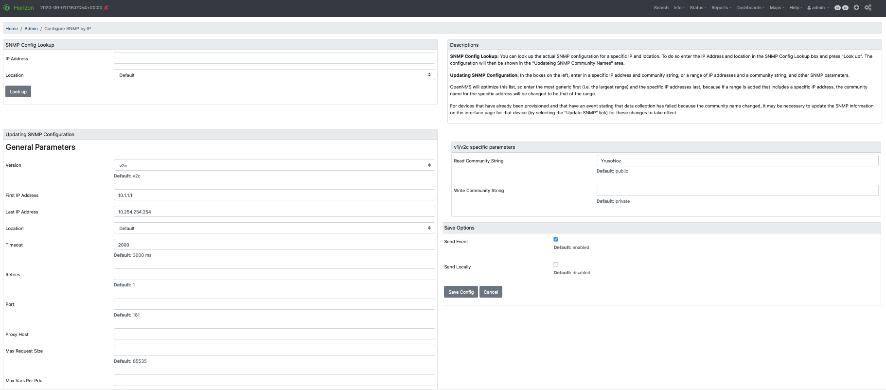
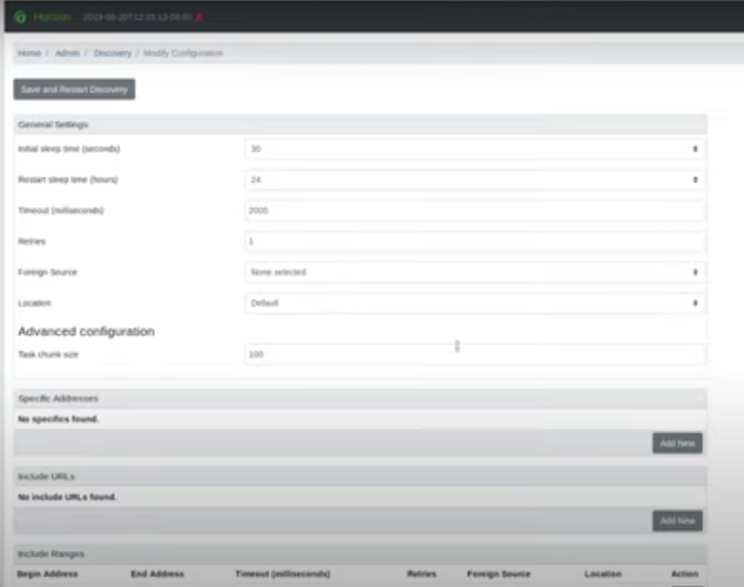
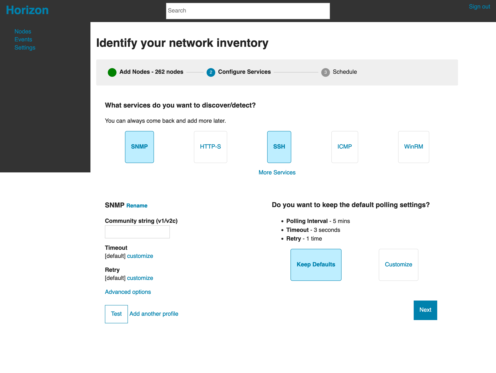
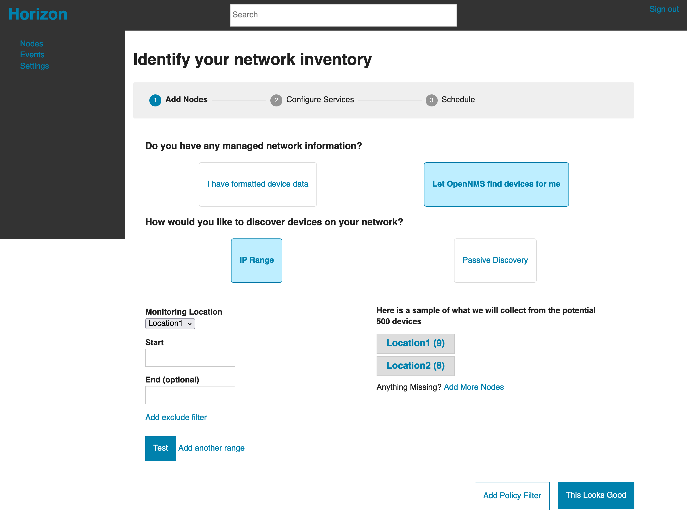

OpenNMS
OpenNMS is a 20 year old open source project that was acquired last year and investing for growth.
As the first designer for network monitoring platform built by developers for developers, it needed to level up to achieve growth targets. I started the process to guide their solutuion to a cloud model while simplifying the UI.
I facilitated a workshop with senior leadership in order to get on the same page for what a "cloud" vision would look like and started to iterate our way there.
Prototyping to MVP
Setup & Onboarding
Migrating from an on-premise solution, we needed a way to create an instance, since users would not be able to run install scripts locally anymore.
I worked on putting some simple steps together to highlight the important aspects for a network admin to get setup.
This included being able to remove a lot of manual steps that were currently taken since we would be able to automate alot of things behind the scenes, resulting in a much more efficient time savings, which was part of the future value proposition.
Discovering Nodes
Choosing features that were important to launch in the cloud, I
In order to keep myself busy and add value when the agile squad was putting out fires resulting from the buggy old windows codebase I worked through every page in the app cleaning up the page designs and code to be more standard and consistent across the site.
This included updating style choices, making things to be cleaner and simpler as well as starting to add better UI patterns that was could utilize going forward.
Current
 
Proposed
 